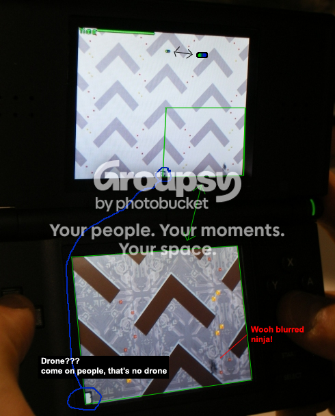

#16873 1 2007-08-21T23:17:52Z Raigan hey,
We'll be attending the
Penny Arcade Expo in Seattle Aug 24-26; we've got a booth in the expo area, and Mare's in a panel on Saturday about making games on low budgets.
The guys at Slick built a really cool stand to hold two TVs and 360s, so if you stop by our booth you can check out the XBLA version of N+ and try to beat us ;p
We're also going to be giving away all sorts of N+ stuff, buttons, stickers, t-shirts and even some "authentic ninja headscarves". If you can't make it we'll probably put some stuff up on the blog when we get back -- you could pretend you were there!!
raigan and mare
#358050 2 2007-08-21T23:25:55Z LittleViking Wow! Wish I could be there.
#358052 3 2007-08-21T23:27:42Z Django I REALLY wish I could go to that. Why can't they have the darn expo somewhere closer to where I live? WHY?

#358056 4 2007-08-21T23:34:55Z Twistkill Wooahh, I wish I could be there.

I find it rather peculiar how I am actually within an hour away from where you two live, though.
#358066 5 2007-08-21T23:57:20Z usaswim Man, I wish I could attend. Sounds awesome.
#358068 6 2007-08-22T00:09:21Z 7! Aug. 24-46?

#358079 7 2007-08-22T00:31:56Z McP3000 Ya know, i dont think any one at these forums live in Seattle...
#358114 8 2007-08-22T02:04:05Z George *Wishes he could be there*
Good luck with the expo!
#358175 9 2007-08-22T04:29:59Z victimBF2 Sounds like loads of fun. As everyone else is saying, I wish I was there.

#358195 10 2007-08-22T06:56:55Z DemonzLunchBreak Actually, I think I'm gonna go.
I live in Seattle, guys.
#358196 11 2007-08-22T07:12:39Z TornadoTK PICTURES.
LOTS AND LOTS OF PICTURES.
YOU WILL TAKE PICTURES OF N+, AND PICTURES WITH M&R. HUGGING IS A MUST.
You won't let us down, will you?
#358200 12 2007-08-22T07:52:34Z Tsukatu A great man once said,
"I wish I could be there." -[everyone in this thread so far]
#358202 13 2007-08-22T08:31:12Z 47 The authentic ninja headscarf better be in the free swag pack we get.
In fact, EVERYTHING should be in the free swag pack we get.
EDIT: Gah. The swag we get from Sublime, I mean, winner or not.
#358212 14 2007-08-22T09:28:46Z 29403 Nice! Like everyone said, I wish I could be there... but I'm in Corsica at the moment

#358225 15 2007-08-22T10:24:13Z Luminaflare Yeah well PAX is a big thing for me (being a gamer and all) and i'm stuck in the UK with no money.
#358229 16 2007-08-22T10:38:37Z writetyper Please, please, get a booth in a expo in austrilasia.
preferably australia.
preferably tasmania.
#358232 17 2007-08-22T11:00:08Z kamikaze3000 You'd better get a booth in some unknown expo in London. That way I can meet my heroes
#358238 18 2007-08-22T11:12:31Z Atilla It is written "I wish I could be there." Quite frequently, in fact.
#358239 19 2007-08-22T11:15:47Z Ignate AARGH. TELEPORTATION POWERS I WANT NOW.
At least get some pictures.
#358246 20 2007-08-22T11:35:44Z Spawn of Yanni I wish you were there.
But yeah, sounds cool.
#358357 21 2007-08-22T19:20:55Z epigone Nice! I wish I could go, but Seattle is a tiny bit all the way across the country from where I am.
#358363 22 2007-08-22T19:36:29Z smort I love Penny Arcade like a baby octopus.
Unfortunately, being in Canada, it's about a catapult ride across the border and 900 miles away.
Wish I could go, and as requested by so many others, pictures. Lots of pictures.
Oh, also, do you guys ever go to any expo between there and Kitchener?
#358400 23 2007-08-22T21:47:12Z Calcy Awesome. I hope you guys have fun and generate more interest in N+!
#358467 24 2007-08-23T00:36:01Z Animator Must be awesome.
I bet you're owning everyone with your game.
I bet they're like this:

Send pictures.
#358565 25 2007-08-23T05:06:00Z T3chno Wish it was in LA.

#359308 26 2007-08-25T17:21:32Z DemonzLunchBreak After further discussion with my family and friends, I'll be heading over there tomorrow morning.
I'm (
) Excited (
)!
#359410 27 2007-08-26T00:43:13Z M_Sabata Well, I only live 2000 MILES AWAY....

#359504 28 2007-08-26T06:17:15Z Raigan After further discussion with my family and friends, I'll be heading over there tomorrow morning.
I'm ( ) Excited ( )!
awesome!
our booth is on the 4th floor in the expo hall, it's in the far left corner -- right next to the men's room

so far it's been great -- everyone seems to like N+. we're almost out of stickers and buttons but we'll save you some.
#359518 29 2007-08-26T06:59:17Z BeSilence #359525 30 2007-08-26T07:21:42Z tktktk #359526 31 2007-08-26T07:25:37Z BeSilence Remember that "Zooming" Idea we had from what i read on tk's link it seems to be implemented.
#359623 32 2007-08-26T15:15:00Z Ignate After further discussion with my family and friends, I'll be heading over there tomorrow morning.
I'm ( ) Excited ( )!
GAH. I WANT YOUR PARENTS.
You owe me N+ swag.
EDIT: Wait? New enemies? SOUNDTRACK?!!
DOUBLE GAH.
#359841 33 2007-08-27T02:55:40Z M_Sabata Here are some N+ impressions I found, from PAX:
http://www.joystiq.com/2007/08/25/pax-07-hands-on-n-ds/
It looks amazing!
#359849 34 2007-08-27T03:35:35Z DemonzLunchBreak Here are some N+ impressions I found, from PAX:
http://www.joystiq.com/2007/08/25/pax-07-hands-on-n-ds/
It looks amazing!
It is! I've played it.
#359853 35 2007-08-27T03:54:30Z Twistkill It is! I've played it.
I think I speak for a lot of people when I say that you do not realize how much I envy you and hate you at the same time right now.
#359864 36 2007-08-27T04:11:11Z jtbandes YOU LUCKY - !!!!
Quote
[20:37] * Demonz (Demonz@private-E23EC2F4.tukw.qwest.net) has joined #n
[20:37] * KinGAleX gives voice to Demonz
[20:37] <Demonz> Hello.
[20:38] <Demonz> I met Mare and Raigan today.
[20:38] <lord_day> Wow Demonz.
[20:38] <LittleViking> Whoooooooa.
[20:38] <smartalco> srsly o_O
[20:38] <LittleViking> How are they?
[20:38] <lord_day> Thats awesome.
[20:39] <Demonz> I did.
[20:39] <LittleViking> Demonz isn't telling me about Mare and Raigan. ;_;
[20:39] <Demonz> They were great.
[20:39] <smartalco> thats specific
[20:39] <jtbandes> 
[20:40] <smartalco> go on demonz
[20:40] <Demonz> Haha, okay.
[20:40] <Demonz> I got to play N+.
[20:40] <jtbandes> o__O
[20:40] <Demonz> for xbla.
[20:40] <lord_day> YOU WHAT
[20:40] <Obelisk> **** YOU
[20:40] <Obelisk> ;_;
[20:40] <smartalco> o____O
[20:40] <Demonz> Ask Mare or Raigan.
[20:40] <jtbandes> Nice!
[20:40] <jtbandes> How was it?
[20:40] <jtbandes> What's changed?
[20:40] <Demonz> I think Mare took a picture, actually.
[20:40] <lord_day> For what console?
[20:40] <Demonz> N+ was amazing.
[20:40] <Demonz> xbox.
[20:40] <lord_day> Who else was there?
[20:40] <kkstrong0> xbla
[20:41] <kkstrong0> did he go to seatle for something?
[20:41] <Demonz> Raigan said that the DS and PSP versions weren't even in alpha stage yet.
[20:41] <smartalco> lol
[20:41] <Obelisk> wow
[20:41] <Obelisk> did they say a date when it would be out?
[20:41] <jtbandes> It's got multiplayer, right?
[20:41] <Demonz> Yes.
[20:41] <jtbandes> Did you / could you try that?
[20:41] <Demonz> multiplayer is amazing.
[20:41] <jtbandes> o_o
[20:41] <Obelisk> did they say a date when it would be out?
[20:42] <jtbandes> How does it work?
[20:42] <Demonz> It makes the game really, really fun.
[20:42] <Obelisk> did they say a date when it would be out?!?
[20:42] <jtbandes> Like, how is time kept track of?
[20:42] <jtbandes> OBELISK SHUSH
[20:42] <jtbandes> Probably not, I'd guess.
[20:42] <Demonz> OBELISK: December.
[20:42] <jtbandes> O_O!
[20:42] <Obelisk> ok
[20:42] <Demonz> For xbox.
[20:42] <Obelisk> cool
[20:42] <Obelisk> 25th?
[20:42] <Demonz> I don't know.
[20:42] <Obelisk> ok
[20:42] <Demonz> Raigan wasn't specific.
[20:42] <Obelisk> ah
[20:43] <Demonz> Mutiplayer works a bunch of different ways.
[20:43] <jtbandes> What ways?
[20:43] <Demonz> There's race mode and co-op mode.
[20:43] <jtbandes> YAY
[20:43] <Obelisk> co-op?
[20:43] <Obelisk> how does that work?
[20:43] <Demonz> Both players play the same map.
[20:43] <Demonz> And start from the same place.
[20:43] <jtbandes> o_O
[20:43] <jtbandes> Exact same place?
[20:43] <Demonz> but it adds a lot of strategy.
[20:43] <lord_day> Is there a Vs mode aswell?
[20:43] <jtbandes> Or slightly set off?
[20:43] <Demonz> Yeah.
[20:44] <Obelisk> ok
[20:44] <Demonz> Exact same place.
[20:44] <jtbandes> l_d, wouldn't vs. be race?
[20:44] <lord_day> I dunno.
[20:44] <lord_day> Or survival.
[20:44] <Obelisk> if one dies then they both lose?
[20:44] <jtbandes> Is it, Demonz?
[20:44] <lord_day> Wait.
[20:44] <lord_day> Demonz, how do enemies choose who to chase?
[20:44] <Demonz> But, for instance, I would jump into all the mines, and explode them, then my friend would go through the map.
[20:44] <Obelisk> oh
[20:44] <jtbandes> AWESOMENESS
[20:44] <Obelisk> nice
[20:44] <lord_day> Ahaha, thats sounds like cheating.
[20:44] <Demonz> Gauss turrets have three little target thingys
[20:44] <jtbandes> !O_O_!_
[20:44] <Demonz> So you can't cheat them as easily.
[20:44] <jtbandes> Three?!
[20:44] <lord_day> Three?
[20:44] <Demonz> Yes.
[20:44] <jtbandes> WHy 3?
[20:45] <Demonz> I'm not sure.
[20:45] <jtbandes> And how do they work, target 3 people at once?
[20:45] <Obelisk> eh
[20:45] <Demonz> And they look way different.
[20:45] <jtbandes> Or just what?
[20:45] <lord_day> And what about rockets?
[20:45] <jtbandes> What do the gausses look like?
[20:45] <Demonz> Rockets only shoot one.
[20:45] <Demonz> So you can distract them.
[20:45] <Obelisk> their*
[20:45] <Demonz> Yeah, race is a vs. mode.
[20:46] <Demonz> Oh, and I almost forgot about survival.
[20:46] <jtbandes> I don't see how 3 gauss targets is different from 2 if it's 2-player.
[20:46] <Obelisk> OOO
[20:46] <Demonz> I didn't play that one.
[20:46] <jtbandes> Do you know how it works?
[20:46] <lord_day> Man,
[20:46] <Obelisk> why 3 and not 2?
[20:46] <Demonz> Yeah, basically.
[20:46] <lord_day> Now I need to buy an Xbox....
[20:46] <Obelisk> lol
[20:46] <Jacksoar> I need a 360 anyways
[20:47] <Demonz> Essentially, it's the last ninja standing. The person with the most gold and least deaths wins.
[20:47] <Obelisk> i'd give you mine, l_d, but its fucked up
[20:47] <lord_day> They should make N+ for PC...
[20:47] <Obelisk> will it be free demonz?
[20:47] <lord_day> I'd buy it.
[20:47] <Demonz> I don't think so.
[20:47] <Obelisk> oh
[20:47] <Demonz> I'm not sure, though.
[20:47] <jtbandes> Demonz, how do the 3 gauss targets work?
[20:47] <Obelisk> oh sure... they make N freeware... but no N+
[20:47] <lord_day> Also, I'd get the Xbox version free.....
[20:47] <Obelisk> not*
[20:48] <Demonz> jtbandes, I think they target both players, but I'm not exactly sure.
[20:48] <Obelisk> demonz
[20:48] <jtbandes> But that'd be 2.
[20:48] <jtbandes> Meh.
[20:48] <Demonz> Meh.
[20:48] <jtbandes> Anyway, what else has changed? Different enemies?
[20:48] <Obelisk> is it multiplayer through xbox live or splitscreen?
[20:49] <Obelisk> ???
[20:49] <Demonz> multiplayer is on the same screen.
[20:49] <Demonz> There's no split.
[20:49] <Obelisk> no
[20:49] <Obelisk> i mean
[20:49] <Demonz> You can do either local multiplayer or online multiplayer.
[20:49] <Obelisk> nice
[20:49] <jtbandes> Any new enemies/items?
[20:49] <Demonz> I didn't see any.
[20:50] <Demonz> There are new tiles, though.
[20:50] <Jacksoar> sweet
[20:50] <jtbandes> Yeah, I think they mentioned that, didn't they?
[20:50] <jtbandes> WHat are they?
[20:50] <Demonz> There's a smaller triangle, a smaller square, and a bunch of others.
[20:50] <jtbandes> Cool.
[20:50] <jtbandes> Hm..
[20:50] <jtbandes> What else?
[20:51] <jtbandes> Are the physics different, or is that only going to be 1.5?
[20:51] <Demonz> The physics are identical, according to Raigan, but they feel a little different.
[20:51] <jtbandes> Well, the way you play is different.
[20:51] <Demonz> I'm not sure if that's just because of the console switch, though.
[20:51] <jtbandes> What are the controls?
[20:51] <Demonz> Yeah.
[20:51] <smartalco> probably just because of the different median
[20:51] <smartalco> ya
[20:51] <Demonz> A is jump.
[20:52] <jtbandes> Yeah, makes sense.
[20:52] <smartalco> lol
[20:52] <jtbandes> Hm.
[20:52] <Demonz> Left-joystick thingy is move.
[20:52] <jtbandes>
[20:52] <jtbandes> Uh... what else?
[20:52] <smartalco> "y is kill"
[20:52] <smartalco> im guessing >_>
[20:52] <jtbandes> Haha.
[20:52] <jtbandes> Probably.
[20:52] <Demonz> X, actually.
[20:52] <LittleViking> ..N doesn't have too many controls.
[20:52] <Demonz> X is kill.
[20:52] <smartalco> ah...
[20:53] <smartalco> does it still have boss mode >_>
[20:53] <Trogdor007> Wait, this isn't Frisky Dingo...
[20:53] <jtbandes> That wouldn't make sense.
[20:53] <smartalco> so jt
[20:53] <jtbandes> ?
[20:53] <smartalco> does a ninja /running away/ from enemies make sense?
[20:53] <smartalco> no
[20:53] <jtbandes>
[20:53] <smartalco> so why does having a boss mode have to make sense?
[20:53] <LittleViking> Um, yes it does.
[20:53] <smartalco> >_>
[20:53] <jtbandes> True, our ninja doesn't have weapons.
[20:53] <Demonz> Ninjas are supposed to be stealthy.
[20:53] <jtbandes> Demonz, what else is different?
[20:53] <smartalco> but kick ass
[20:54] <lord_day> Boss mode is easier than pasue I think.
[20:54] <smartalco> ya l_d
[20:54] <Demonz> The graphics are different.
[20:54] <jtbandes> How so?
[20:54] <Demonz> They're a little more detailed.
[20:54] <jtbandes> 
[20:54] <Demonz> But not garish.
[20:55] <Obelisk> demonz
[20:55] <Demonz> Obelis?
[20:55] <Demonz> *k
[20:55] <Obelisk> thank you for telling us all this
[20:55] <Obelisk>
[20:55] <Demonz> You're welcome.
#359867 37 2007-08-27T04:15:36Z Twistkill ^ ...
Well, if Mare/Raigan gave me a time and place when I could meet them, I could, considering that I'm an hour away from downtown Toronto. (Is it just me or have I mentioned this, possibly more than twice before?)
You're one lucky guy, Demonz.
#359868 38 2007-08-27T04:19:29Z LittleViking Well, if Mare/Raigan gave me a time and place when I could meet them, I could, considering that I'm an hour away from downtown Toronto. (Is it just me or have I mentioned this, possibly more than twice before?)
I'm sure if you generate some interest in a Toronto MetaCon, they would try to show up. I know there are at least a few members here in Toronto. (Tanner and stepself come to mind.)
#359879 39 2007-08-27T04:39:06Z Twistkill I'm sure if you generate some interest in a Toronto MetaCon, they would try to show up. I know there are at least a few members here in Toronto. (Tanner and stepself come to mind.)
Yes, there were actually already plans with the California MetaCon to have a Canadian version sometime. You know I would totally be there. I was thinking the Eaton Centre/Yonge and Dundas Square or just the CN Tower will do...
#359907 40 2007-08-27T05:59:43Z Spawn of Yanni Demonz, that's insane.
#359942 41 2007-08-27T09:40:03Z smort Well, if Mare/Raigan gave me a time and place when I could meet them, I could, considering that I'm an hour away from downtown Toronto. (Is it just me or have I mentioned this, possibly more than twice before?)
I'm sure if you generate some interest in a Toronto MetaCon, they would try to show up. I know there are at least a few members here in Toronto. (Tanner and stepself come to mind.)
Considering I only live in Kitchener, I would TOTALLY try and make it to meet Tanner, stepself, and Twistkill. Not to mention Mare and that guy.
Also, multiplayer sounds AWESOME. I can't wait. Hopefully it will stop all the perpetual whining.
#360184 42 2007-08-28T02:41:15Z M_Sabata It being planned to come out around October right?
#360191 43 2007-08-28T02:52:10Z Twistkill It being planned to come out around October right?
In that IRC conversation that was posted, I believe Demonz mentioned that the release date is somewhere in December, according to Raigan.
#360816 44 2007-08-30T04:21:16Z Raigan Our latest blog post has some pics of N+ merchandise and other PAX-related stuff -- including a shot of the back of DemonzLunchBreak's head! (we have a picture of the front of his head, but we didn't know if he'd mind)
Check it out!#361191 45 2007-09-01T01:25:23Z Krant A friend of my sent this link to me:
http://www.metanetsoftware.com/N+/pax/pages/setup.html
http://www.slickentertainment.com/images/P...PAXSketchup.jpg
He sent it to me because I like Sketchup... As soon as possible, I began to build that. And I finished it...
Please, tell me what you think of it.
http://www.bcoms.net/upload/images.asp?id=...00791821301.jpg
The monitor left is made in N-Game by me. And in
that left monitor you also see that N-Game PAX Place
. Do you like it ^^.
#361201 46 2007-09-01T03:00:27Z beginner2 I live pretty close to downtown toronto (north york), so I'd attend a MetaCon in canada, if my parents let me. Anyway, love the pics. And I might just buy the xbox or psp version when it comes out (but first, I need an xbox 360 or psp)
#361242 47 2007-09-01T06:58:26Z Spawn of Yanni Did you change that page of pictures since you posted that last blog? I could've sworn they were different. The current set of photos looks even more awesome, actually.
Edit: Oh, right. Two sets.
#361278 48 2007-09-01T12:52:26Z Ignate Demonz is being mean to us.
RIOT!!!
BTW, was there a soundtrack in N+?
#361290 49 2007-09-01T14:18:44Z LittleViking BTW, was there a soundtrack in N+?
Yes.
From the article that tktktk linked: "The game will feature all new levels designed by original creators Metanet in both its Pure (based on the original Flash game) and Plus (new graphics and enemies) versions. Both the DS and PSP versions contain new
soundtracks by an artist called 5Limbs, though I didn't hear any of this. Also seen but not truly experienced is the NED level editor, which, on the DS, will be stylus-controlled, and will have both ad-hoc and online level sharing."
#361294 50 2007-09-01T14:52:15Z Animator The game will feature all new levels designed by original creators Metanet in both its Pure (based on the original Flash game) and Plus (new graphics and enemies) versions.
I wonder if MTI went international...
#362003 51 2007-09-04T00:29:43Z victimBF2 Sweet, just saw the pictures. Looked like a huge load of fun.
#362403 52 2007-09-05T08:05:51Z fingersonthefrets http://www.myspace.com/5limbs LV says: Language warning
^ artist who's making the music
haven't heard any yet cos myspace sometimes stuffs up for me...

congrats guys on everything, glad you enjoyed it and from the pics it looks great
one thing though in the pic on tktktks link the time thing doesn't quite work for me

just saying the green doesn't fit IMO
heh i had to say it....
#362435 53 2007-09-05T15:27:01Z Pheidippides Sweet, just saw the pictures. Looked like a huge load of fun.
QFE. I wish I was there.
#362995 54 2007-09-07T21:04:01Z Ad -ING WOW.
/me buys X360.
I need this.
I also need a copy of the 'DIE' poster. Or maybe the file, at least.
That's a lot of starch.
#363046 55 2007-09-08T01:00:36Z mistaken72 Aww man, I really wish I could attend it. Not to beat them at it, but to see the giveaways, I'm all the way in Singapore, stupid location.
#363191 56 2007-09-08T12:25:41Z cmg Wow, those screenshots look sweet, I just hope the game turns out to be as good as it looks in those shots. A soundtrack is no doubt an awesome idea, hope it turns out to be good, what genre is the music in the soundtrack?
EDIT: Just seen the band's Myspace page, just have a few questions.
1. Is the band's name "5ive" or "5ive Limbs" and is the band's Myspace address
http://www.myspace.com/5limbs or
http://www.myspace.com/thereal5ive
3. Is the soundtrack going to be totally new material or will existing music of the band be used? I like the song "Lean Back Kids" but somehow I think the lyrics may need to be changed a bit. Will the words be included in the game or just an instrumental version without singing.
4. Are any other bands going to be providing music for the soundtrack or just 5ive Limbs?
5. Can we help you choose some songs from unsigned artists we know? Probably not, but it'd be cool
Also i've just created the N+ Wikipedia page over at
http://en.wikipedia.org/wiki/N+ feel free to contribute to the page
#363589 57 2007-09-09T11:14:33Z Ad 1. 5ive is a 90's pop boyband.
2. o_O
3. It says 'new', so probably.
4. Probably not.
5. NO
#363629 58 2007-09-09T16:04:42Z Animator 
Hmm.. I do see some differences here.
The gold is more shinier.
Mines are more shinier.
But is that green/black thing on the top?
#363647 59 2007-09-09T17:11:05Z cmg Possibly the switch to open the exit.
I've just noticed that there is no exit on the top screen, does this mean that the top screen wont show the entire level, just a part of it.
Maybe this will allow for even bigger levels
#363674 60 2007-09-09T18:39:32Z smartalco ^your backwards, the bottom screen doesn't show the entire level, the top one does
the green bar on top is the time (it says time next to it...)
the little black and green rectangle thingy is what i would presume to be the exit switch
the exit is the little square on the bottom of the top screen, you can see part of it on the left side of the bottom screen
(all of this is just guessing, but i don't see another way)
#363680 61 2007-09-09T18:50:18Z TornadoTK Wow. After seeing the game on all three consoles, that's all I can get out of my mouth at the moment. Wow. You know what? Even though I qualified in Sublime for XBLA and DS, I might just buy extra copies, just to say I supported my developers.
You guys rock.
#363692 62 2007-09-09T19:27:05Z Animator That ain't an exit.
It's a drone.
Look at it closer and compare it with other drones.
#363744 63 2007-09-09T22:13:49Z cmg Yeah, I think its a drone too, but the pic isn't very clear so I can't really tell.
Also TornadoTK where'd you see the game on all 3 consoles?
#363874 64 2007-09-10T04:30:46Z smartalco 
(img speaks for self)
#364136 65 2007-09-11T08:36:07Z tktktk Smartalco, it's the pre-alpha version, so no complaining.
Also, there's an interview with Mare and Raigan
here. The more interesting bits:
Quote: Joystiq Interview
Any details about release estimates or platform for Robotology (Metanet's second game)?
Ah, Robotology. It's taking forever, and has been delayed by N+, which has required more time and work than we thought. But we should be able to get back to it shortly, and are planning to enter it in next year's IGF.
It'll be released on Mac/PC first, but we're not sure where it'll go from there.
Are you done done done with N after this, or do you foresee a return to the project after Robotology?
Well, we're planning on releasing an official web-playable version of N in the near future, and there's still an update to N for PC that needs to be done... and when we're done those, it'll probably be just about time to get started on N, or NN, or whatever the sequel will be called... so yes, probably, but first we have a few other game ideas we need to get finished!
Since you challenged me to N+ (and I chickened out), what kinds of multiplayer options will be available in the Xbox version? And do you feel that this changes the experience of the game beyond, you know, having another person there?
There are three flavours of multiplayer: one cooperative and two competitive (survival and race). Multiplayer mode isn't *too* different from sinleplayer mode, gameplay-wise, but it certainly has some interesting new gameplay mechanics. For example, cooperative mode: in some levels your "roles" are not identical. You can either distract the enemies while your friend unlocks the exit, or you can make the treacherous journey to the exit yourself, while your friend holds off the robot hordes. You have to have flexible skills, and be ready to change direction immediately if necessary.
Are your games aimed at hardcore N lovers or new players? Or was N+ designed with both in mind?
N+ was definitely designed with both in mind. First we leveled out the learning curve and added a bunch of very easy/tutorial levels so new players wouldn't feel so intimidated. For the hardcore N fans we made some creative levels that can be traversed using either beginner or advanced methods, so they won't be completely bored by the easier levels. We also added a "hardcore" unlockable for those that want more, and more difficult levels, once they've beaten the game.
#364164 66 2007-09-11T14:08:03Z maximo That interview is Paxtastic!
#364177 67 2007-09-11T15:38:08Z Ad Niiice.
Can't wait to co-op with my mates on the Xbox. Will be ace.
#364191 68 2007-09-11T17:10:37Z jc_ That interview is Paxtastic!
That means it's good, right?
#364196 69 2007-09-11T17:29:48Z maximo aye
#364198 70 2007-09-11T17:34:07Z Chase That 'Hardcore' mode includes MTI, am I right?
#364205 71 2007-09-11T18:19:11Z LittleViking That 'Hardcore' mode includes MTI, am I right?
No, I don't think anything from the 80's column in N v1.4 will be in N+. There are legal issues involving ownership of levels and all that. i.e. If they included MTI in the console games, blue_tetris would be entitled to royalties for it.
#364209 72 2007-09-11T19:19:21Z jc_ #364242 73 2007-09-11T20:48:42Z smartalco Smartalco, it's the pre-alpha version, so no complaining.
complaining...??, I was showing that I don't think there is any way that is a drone to cmg and the others
anyway, awesome internview, more tidbits of info!
#364274 74 2007-09-11T21:55:34Z tktktk Smartalco, it's the pre-alpha version, so no complaining.
complaining...??, I was showing that I don't think there is any way that is a drone to cmg and the others
Ah, I see. Just from looking at the image I thought you were pointing out the stuff you weren't satisfied with.
Anyway, things look to be going great. The multiplayer modes in particular sound fantastic; it sounds like they'll open up a ton of new gameplay possibilities.
#364349 75 2007-09-12T02:03:02Z TornadoTK PSP Screenies
DS and XBLA screens shown earlier.